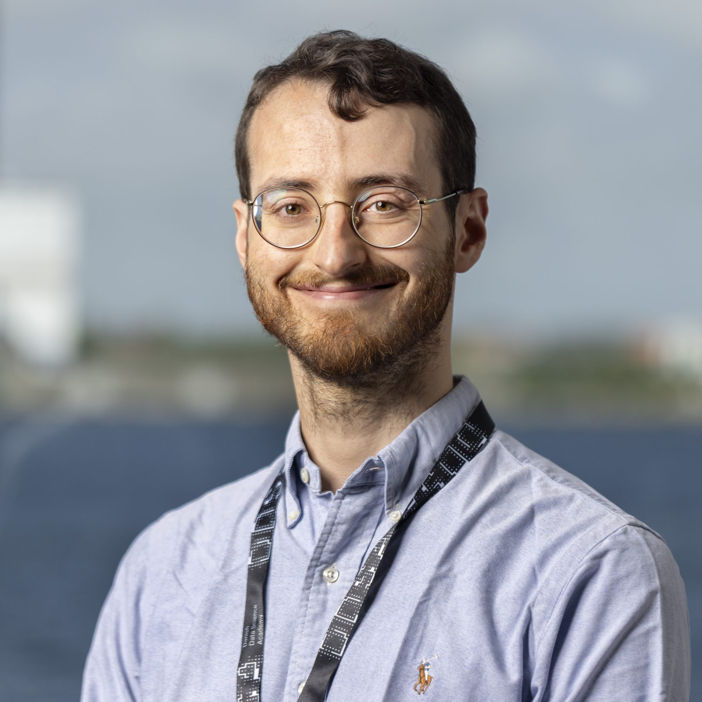

Hi, I'm Luigi!
I am a postdoctoral researcher at the University of Copenhagen. My research focuses on representation learning, causal inference, representational similarity in deep learning, and interpretability.
I completed my PhD at the Max Planck Institute for Intelligent Systems and the University of Tübingen. During my PhD, I participated in an ELLIS exchange with the Parietal team at Inria-CEA and completed an internship at Amazon Research. In 2024, I received the ELLIS PhD Award, which recognizes outstanding dissertations in the field of modern AI. From 2024 to 2025, my postdoctoral research was supported by a fellowship from the Danish Data Science Academy (DDSA).
In January 2027, I will join the Technical University of Denmark (DTU) as an assistant professor.
Please feel free to get in touch!